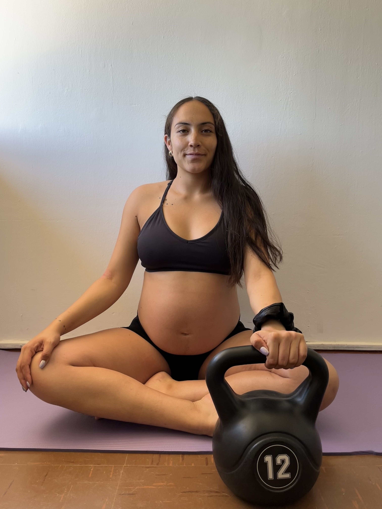
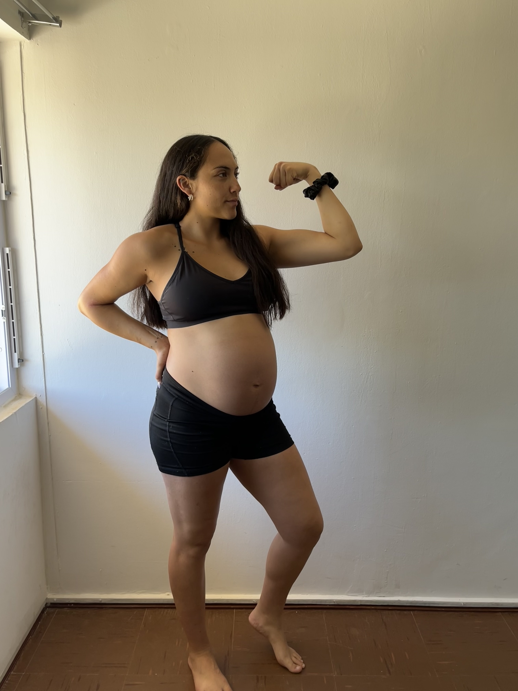

Entrenamiento personalizado y asesoría 1 a 1 para mujeres embarazadas. Cuida tu cuerpo, honra tu proceso, celebra tu fuerza.


Entrenadora especializada en fitness prenatal y postparto, apasionada por acompañar a las mujeres en uno de los momentos más transformadores de sus vidas.
Sé de primera mano lo que se siente cuando tu cuerpo cambia y no sabes cómo cuidarte. Por eso decidí especializarme: para que ninguna mamá tenga que atravesar sola ese camino.
Mi enfoque combina movimiento seguro, escucha activa y mucho respeto por los ritmos de cada cuerpo. No hay dos embarazos iguales, y eso me parece lo más hermoso de este trabajo.
Cada programa está diseñado para adaptarse a tu etapa, tu cuerpo y tus objetivos únicos.
Sesiones de movimiento adaptadas a tu trimestre, condición física y bienestar emocional. Juntas construimos una rutina que te haga sentir fuerte y segura.
Entrena desde casa, a tu ritmo, con un programa diseñado trimestre a trimestre. Solo 20 minutos al día son suficientes para llegar al parto fuerte, ágil y sin miedo.
Recursos, guías y consejos honestos para acompañarte en cada etapa de tu proceso.
Cada historia es única. Cada proceso, sagrado.
"Llegué con mucho miedo a moverme en mi primer trimestre. Maiten me enseñó que el movimiento no es un riesgo, es un regalo. Terminé mi embarazo más fuerte que al principio."
"Las sesiones de asesoría me cambiaron la vida. Por fin entendí cómo alimentarme sin culpa y cómo preparar mi cuerpo para el parto."
"El postparto fue difícil, pero tener a Maiten acompañándome hizo toda la diferencia. Me enseñó a escuchar mi cuerpo sin compararlo."
"Nunca había hecho ejercicio y estaba aterrada. Maiten tiene una paciencia y una energía especial. Me siento orgullosa de mí misma cada sesión."
"La recomiendo con el corazón. Es profesional, empática y siempre está disponible cuando más la necesitas. Mi embarazo fue hermoso gracias a ella."
"Empecé en el segundo trimestre y ojalá lo hubiera hecho antes. Cada ejercicio fue seguro, ajustado y sobre todo: con mucho amor."
Resuelvo todas tus dudas antes de comenzar. Si no encuentras tu pregunta aquí, escríbeme.
Sí, el ejercicio moderado y adaptado es altamente recomendado durante el embarazo. Reduce el riesgo de complicaciones, mejora el estado de ánimo y prepara tu cuerpo para el parto. Siempre trabajamos con el aval de tu médico y adaptamos cada movimiento a tu condición.
¡Absolutamente! El programa se adapta a tu trimestre actual. Tanto si estás en el primer mes como si estás próxima al parto, hay trabajo seguro y beneficioso para ti. También acompañamos el postparto desde las primeras semanas de recuperación.
Las sesiones son por videollamada (Zoom o Google Meet). Solo necesitas conexión a internet, ropa cómoda y una esterilla. La experiencia es igual de personalizada: te veo, te corrijo y ajustamos en tiempo real. Muchas de mis clientas las prefieren por la comodidad.
Trabajamos en estrecha comunicación con tu equipo médico. Hay muchas formas de moverse de manera segura incluso en embarazos de riesgo. La evaluación inicial nos permite definir qué es apropiado para ti específicamente.
Puedes cancelar o reagendar tu sesión con hasta 24 horas de anticipación sin ningún costo. Entendemos que el embarazo trae imprevistos y somos completamente flexibles. Tu bienestar es lo primero siempre.
Depende del tipo de parto y tu recuperación individual. Generalmente entre las 6 y 8 semanas después del parto vaginal, y un poco más si fue cesárea. Comenzamos con ejercicios suaves de suelo pélvico y respiración antes de avanzar.
La primera sesión es sin costo y sin compromiso. Cuéntame dónde estás y cómo te puedo acompañar.